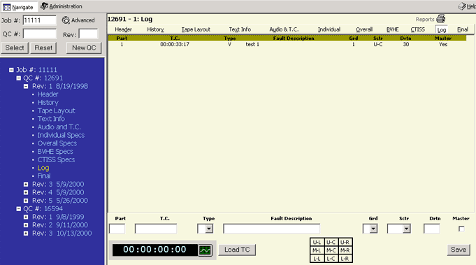

Alt+l then ENTER will take you to this page or clicking on LOG in the menu bar on the right side. You can also click on the word LOG in the Tree Frame (blue area) as in example 1A.
 1A.
Time Code can be entered manually or by clicking on the LOAD TC button. There is a pull down menu for type with choices A, V or F. A fault description can be entered as well as other data including Grd, Sctr, Drtn and master. A key diagram is provided for the Sctr choices. After entering the information please click the SAVE button to save your data.
The user can click on an entry and a second screen will pop up, like example 1B. In this screen the previous entry can be modified or deleted. To exit the screen without changes click the CANCEL button. Time code can be obtained by clicking on the LOAD TC button. To save any changes click the SAVE button.
1B.